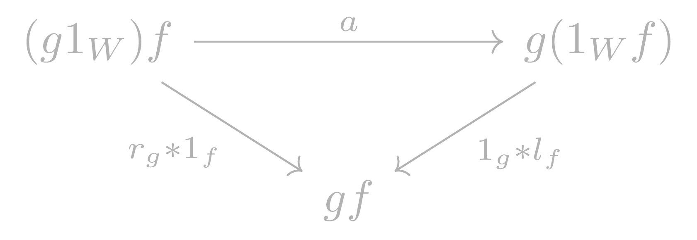
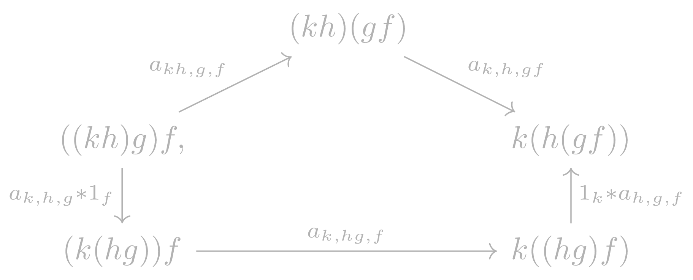

Bicategories
Table of Contents
1 Idea
2 Definition
A bicategory is a tuple \((B, 1, c, a, l, r)\) consisting of the following data
2.1 Objects
\(B\) is equipped with a class \(\operatorname{Ob}(B)=B_0\), whose elements are called objects or 0-cells in \(B\). If \(X \in B_0\), we write \(X \in B\).
2.2 Hom Categories
For each pair of objects \(X, Y \in B\), \(B\) is equipped with a category \(B(X,Y)\), called a hom category.
- Its objects are called 1-cells in \(B\). The collection of 1-cells in \(B\) is denoted by \(B_1\).
- Its morphisms are called 2-cells in \(B\). The collection of all the 2-cells in \(B\) is denoted by \(B_2\).
- Composition and identity morphisms in the category \(B(X,Y)\) are called vertical composition and identity 2-cells, respectively.
- An isomorphism in \(B(X,Y)\) is called an invertible 2-cell, and its inverse is called a vertical inverse.
- For a 1-cell \(f\), its identity 2-cell is denoted by \(1_f\).
2.3 Identity 1-Cells
For each object \(X \in B\),
\[1_X : \mathbf{1} \rightarrow B(X,X)\]
is a functor. We identify the functor \(1_X\) with the 1-cell \(1_X(*) \in B(X,X)\), called the identity 1-cell of \(X\).
2.4 Horizontal Composition
For each triple of objects \(X, Y, Z \in B\),
\[c_{XYZ} : B(Y,Z) \times B(X,Y) \rightarrow B(X,Z)\]
is a functor, called horizontal composition. For 1-cells \(f \in B(X, Y)\) and \(g \in B(Y,Z)\), and 2-cells \(\alpha \in B(X,Y)\) and \(\beta \in B(Y,Z)\), we use notations:
- \(c_{XYZ}(g,f) = g \circ f\) or \(gf \)
- \(c_{XYZ}(\beta, \alpha) = \beta * \alpha\)
2.5 Associator
For objects \(W, X, Y, Z \in B\),
\[a_{WXYZ} : c_{WXY}(c_{XYZ} \times \operatorname{Id}_{B(W,X)}) \rightarrow c_{WYZ} (\operatorname{Id}_{B(Y,Z)} \times c_{WXY})\]
is a natural isomorphism called the associator, between functors
\[\alpha_{WXYZ} : B(Y,Z) \times B(X, Y) \times B(W, X) \rightarrow B(W, Z).\]
2.6 Unitors
For each pair of objects \(X, Y \in B\),
\[c_{XYY}(1_Y \times \operatorname{Id}_{B(X,Y)}) \xrightarrow{l_{XY}} \operatorname{Id}_{B(X,Y)} \xleftarrow{r_{XY}} c_{XXY}(\operatorname{Id}_{B(X,Y)} \times 1_X)\]
are natural isomorphisms, called the left unitor and the right unitor, respectively.
The subscripts in \(c\) will often be omitted. Th subscripts in \(a\), \(l\), and \(r\) will often be used to denote their components. The above data are required to satisfy the following two axioms for 1-cells \(f \in B(V,W)\), \(g \in B(W, X)\), \(h \in B(X,Y)\) and \(k \in B(Y, Z)\).
2.7 Unity Axiom
The middle unity diagram

in \(B(V,X)\) is commutative.
2.8 Pentagon Axiom
The diagram

in \(B(V,Z)\) is commutative.
3 Remarks
3.1 Notation
- We refer to a bicategory as \(B\), its class of objects.
4 TODO Explanation
5 Examples
5.1 Monoidal categories
Every Monoidal Category is an example of a one object bicategory. This is a generalisation of the observation that a monoid is just a one object category.